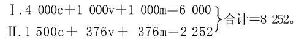
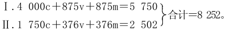
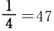

Ⅲ.用公式来说明积累
现在我们按照下列公式来考察再生产：
公式（a）
首先要指出，年社会产品的总额8252，小于第一个公式的总额9000。我们尽可以假定一个大得多的总额，比如说，一个增大10倍的总额。但这里选择一个小于第一个公式的总额，正是为了要清楚地说明，规模扩大的再生产（在这里，这种再生产只是指用较大的投资来进行的生产）与产品的绝对量无关，也正是为了要清楚地说明，对一定量商品来说，规模扩大的再生产所需要的前提只是，既定产品的各种要素已经有了不同的组合，或不同的职能规定，因此，按价值量来说，这种再生产首先只是简单再生产。所改变的，不是简单再生产的各种既定要素的量，而是它们的质的规定，并且这种改变是以后随着发生的规模扩大的再生产的物质前提。(1)
在可变资本和不变资本之间的比例不同时，我们对公式的表述可以不同，例如：
公式（b）
这样，这个公式似乎是为简单再生产而列出的，以至于剩余价值全都作为收入花掉，而没有积累起来。在（a）和（b）这两个场合，年产品的价值量是相同的，只是在（b）的场合，它的各种要素在职能上的组合使再生产按照相同的规模再开始，而在（a）的场合，年产品各要素在职能上的组合却形成规模扩大的再生产的物质基础。在（b）的场合，（875v＋875m）Ⅰ＝1750Ⅰ（v＋m），它和1750Ⅱc交换时，没有余额，而在（a）的场合，（1000v＋1000m）Ⅰ＝2000Ⅰ（v＋m），它和1500Ⅱc交换时，却留下一个余额500Ⅰm，供第Ⅰ部类进行积累。
现在让我们更仔细地分析公式（a）。假定第Ⅰ部类和第Ⅱ部类都把剩余价值的一半积累起来，即把它转化为追加资本的要素，而不是作为收入花掉。因为1000Ⅰm的一半＝500要以这种或那种形式积累起来，作为追加的货币资本投入，也就是说，要转化为追加的生产资本，所以，只有（1000v＋500m）Ⅰ作为收入花掉。因此，Ⅱc的正常的量在这里也只有1500。对1500Ⅰ（v＋m）和1500Ⅱc之间的交换，无须再研究，因为它作为简单再生产的过程已经阐明了；对4000Ⅰc，也无须再考察，因为4000Ⅰc为重新开始的再生产（这一次要按扩大的规模进行）而进行的再组合，同样也作为简单再生产的过程阐明了。
在这里惟一要研究的，是500Ⅰm和（376v＋376m）Ⅱ。一方面要考察第Ⅰ部类和第Ⅱ部类各自的内部关系，另一方面要考察两个部类之间的运动。因为我们假定第Ⅱ部类的剩余价值也有一半要积累，所以在这里应该有188转化为资本，其中有要转化为可变资本，以整数计，可以说有48要转化为可变资本；而剩下140要转化为不变资本。
我们在这里碰上了一个新问题，这个问题的存在本身，对通常的见解来说，必然显得奇怪，因为按照通常的见解，一种商品总是要和另一种商品交换，或者说，商品总是要和货币交换，而这个货币又总是要和另一种商品交换。140Ⅱm所以能够转化为生产资本，只是因为它们由商品Ⅰm中具有同等价值额的部分来补偿。不言而喻，Ⅰm中要同Ⅱm交换的部分，必须由生产资料构成，这种生产资料或者既能进入第Ⅰ部类的生产，也能进入第Ⅱ部类的生产，或者只能进入第Ⅱ部类的生产。这种补偿之所以能够进行，只是由于第Ⅱ部类方面的单方面的买，因为全部有待我们考察的剩余产品500Ⅰm，都要用在第Ⅰ部类的积累上，因此，不能用来同第Ⅱ部类的商品交换；换句话说，第Ⅰ部类的这些剩余产品不能同时既用来积累，又用来消费。因此，第Ⅱ部类必须用现金购买140Ⅰm，但是这样用掉的货币，不会因为以后第Ⅱ部类把它的商品卖给第Ⅰ部类而流回到它那里。并且，在每年的新生产中，只要这种生产是规模扩大的再生产，这种过程就是不断反复发生的。对第Ⅱ部类来说，为这个目的所需要的货币源泉，是从哪里来的呢？
但是，第Ⅱ部类对于新货币资本的形成——这种形成伴随着实际的积累，在资本主义生产中是实际积累的条件，实际上首先表现为简单的货币贮藏——好像是一块不毛之地。
首先，我们有376Ⅱv；这个预付在劳动力上的货币资本376，会由于第Ⅱ部类的商品被人购买而不断地作为货币形式的可变资本回到第Ⅱ部类的资本家手中。不过，这样不断反复离开起点又回到起点（资本家的钱袋）的现象，无论如何不会增加在这个循环里面流转的货币。因此，这不是货币积累的源泉；这个货币也不能从这个流通中取出，以便形成贮藏起来的、潜在的新的货币资本。
但是且慢！这里就没有什么利润可图吗？
我们不要忘记，和第Ⅰ部类相比，第Ⅱ部类具有这样一个优点：第Ⅱ部类所使用的工人，必须再向第Ⅱ部类购买他们自己所生产的商品。第Ⅱ部类是劳动力的买者，同时又是向自己所使用的劳动力的所有者出售商品的卖者。因此，第Ⅱ部类资本家能够：
1.简单地把工资压低到它的平均正常水平以下——这是他们与第Ⅰ部类资本家的共同之处。因此，作为可变资本的货币形式来执行职能的货币，就有一部分游离出来，并在同一个过程的不断反复中成为第Ⅱ部类的货币贮藏的一个正常的源泉，从而形成潜在的追加货币资本的一个正常的源泉。偶然靠欺诈取得的利润，当然和我们这里考察的正常的资本形成的问题无关。但不要忘记，实际支付的正常工资（它在其他条件不变的情况下决定可变资本的量），根本不是由于资本家的好心肠才支付的，而是在既定关系下不得不支付的。因此，这种说明方法就被排除了。如果我们假定376v是第Ⅱ部类所耗费的可变资本，我们就不应该为了说明一个新碰到的问题，而突然偷偷地改变我们的假设，说他们只预付350v，而不是376v。
2.另一方面，第Ⅱ部类作为总体来看，如上所述，比第Ⅰ部类还有一个优点：它是劳动力的买者，同时又是再向自己的工人出售商品的卖者。每一个工业国家都提供了十分明显的实例，证明可以怎样利用这个优点，可以怎样在名义上支付正常的工资，事实上却一部分用实物工资制，一部分用伪造通货的办法（也许还不受法律的处罚），把其中的一部分在不付相应的商品等价物的情况下再夺回来，换句话说，再偷回来。例如，在英国和美国就是这样。（关于这一点，要列举若干恰当的例子来加以说明。）但是，这种做法，正好是第1点所讲的同样的做法，只不过伪装了一下，而且是迂回曲折地进行的。因此，这种做法要和前一种做法一样被排除。这里讲的，是实际上支付的而不是名义上支付的工资。
我们知道，在对资本主义机制进行客观分析时，不能利用这个机制所具有的某些特别的污点作为借口，来排除理论上的困难。但奇怪的是，攻击我的大多数资产阶级批评家竟大喊大叫，似乎我比如说在《资本论》第一册中假定资本家支付劳动力的实际价值（他们大都不是这样做的），这就冤枉了这些资本家！（在这里不妨用谢夫莱赐给我的慷慨，来引用他的一些话。）
因此，要达到上述目的，用376Ⅱv是不行的。
但是，用376Ⅱm，似乎更不行。在这里，只有同一部类的资本家互相对立。他们彼此出售和彼此购买他们所生产的消费资料。这种交换所必需的货币，只是作为流通手段执行职能；在正常的进程中，这种货币必须按照各有关当事人预付到流通中的数量，流回到他们各人手里，这样才能始终不断地重新通过同一轨道。
要从流通中取出这种货币以形成潜在的追加的货币资本，看来只可能通过两种途径。或者是，第Ⅱ部类的一部分资本家欺骗另一部分资本家，用这种方法夺取他们手中的货币。我们知道，新货币资本的形成，不需要先增加通货，而只需要把某些方面的货币从流通中取出，作为贮藏货币贮存起来。即使可以把货币偷来，以致第Ⅱ部类的一部分资本家的追加货币资本的形成，可以和另一部分资本家的直接的货币损失结合在一起，那也不会改变事情的本质。不过第Ⅱ部类中受骗的那一部分资本家会生活得差一些，如此而已。
或者是，必要生活资料所代表的Ⅱm的一部分，直接在第Ⅱ部类转化为新的可变资本。这又是怎样发生的，我们将在本章的结尾（第Ⅳ节）加以研究。
(1) 这一点永远结束了詹姆斯·穆勒和赛·贝利之间关于资本积累的争论，这个争论在第一册（第22章第5节第634页注（65））已经从另一个观点加以论述，这就是在产业资本量不变的情况下产业资本的作用有无扩大的可能。我们以后还要谈到这一点。